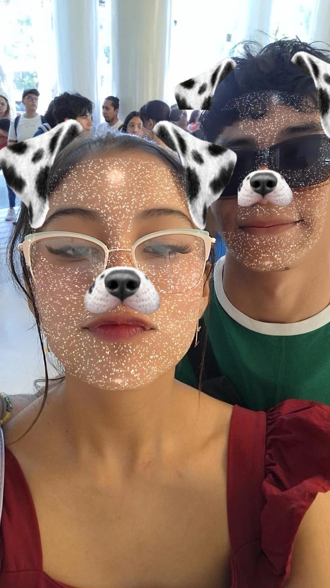
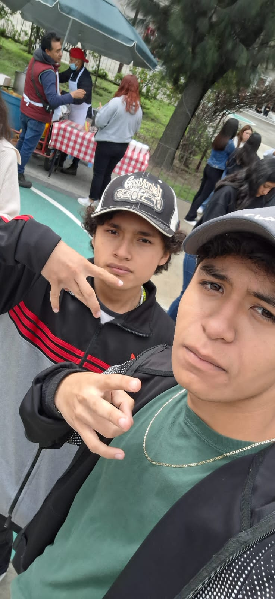

FERNANDA
La conoci apenas en 1er semestre , es una niña muy buena y es alguien muy dedicada a sus cosas y a la escuela
El es muy chistosa y un poco payasita, es muyb estudiosa.Es una niña muy linda y muy amable .
Aunque no la conozco desde hace mucho tiempo en este momento me cae muy bien y la considero muy buena amiga.
Ahora que nos van a poner en diferentes grupos por la carera sí me gustaría seguir teniendo contacto con ella y seguir manteniendo su amistad.

FREDY
FREDY
Somos ya amigos bien apartir de segundo semestre, es un wey con el que siempre cotorreo de muy buena manera tenemos una comunicacion
El es muy ocurrente y divertida al igual que chistoso. Es vato muy amable y buena persona , tenemos la misma vibra. Es de los mejores compañeros y amigos
Es alguien que es muy inteligente aunque luego le gana el despapaye y la hueva. Es muy dedicado a todo.Ahora que nos separan por las carrerasme gustaria estar en
contacto con el y seguir con su amistad.
